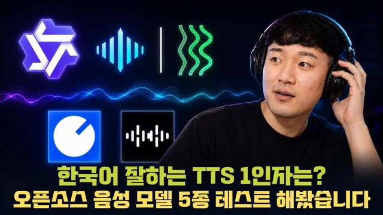

2026 한국어 오픈소스 TTS 모델 5가지 비교 분석!

원본 영상 보기 →
- 나레이션 품질은 평준화됐고, 승부는 예외 처리에서 나요
- 모델 지능(파라미터 크기)과 정확한 낭독은 비례하지 않아요
- 경량 모델이 실용 단계에 진입했어요
2026 한국어 오픈소스 TTS 모델 5가지 비교 분석
채널: 샘 호트만 : AI 엔지니어의 시선
원본 영상: https://www.youtube.com/watch?v=upJhz8I40b0
published: 2026-08-29
한 줄 요약
2026년 상반기 기준으로 공개된 한국어 오픈소스 TTS(Text-to-Speech, 음성 합성) 모델 5종을 직접 비교한 실험 리뷰예요. Qwen3 TTS, VoxCPM2, XTTS3, Supertonic 3, Audio8을 같은 문장·같은 조건으로 생성해서, 나레이션·성우 다양성·숫자/터미널 명령어·다국어·감정 표현·하드웨어 요구량 관점으로 뜯어봤습니다. 결론이 명확해요. "나레이션은 이제 어떤 모델을 써도 충분하고, 차이는 숫자·명령어 예외 처리와 라이선스에서 갈린다"는 겁니다.
전체 내용 정리
TTS가 콘텐츠 자동화의 완성도를 좌우하는 이유와 이번 실험 설계
콘텐츠 자동화에서 가장 까다로운 영역이 음성(보이스)이에요. 화면과 자막을 아무리 잘 자동화해도 음성이 어색하면 영상 전체가 금방 기계처럼 느껴지거든요. 반대로 목소리가 자연스러우면 같은 영상도 훨씬 완성도 있게 들립니다.
그래서 이번 영상은 2026년 상반기 기준 공개된 오픈소스 TTS 후보 아홉 개 정도를 직접 들어보고 별로인 것을 쳐낸 뒤, 다섯 개(Qwen3 TTS, VoxCPM2, XTTS3, Supertonic 3, Audio8)를 골라 같은 조건으로 음성을 만들어 비교해요.
단순히 듣기 좋은지만 보지 않습니다. 자연스러운 한국어 발음, 숫자·터미널 명령어 같은 까다로운 문장, 감정 표현, 그리고 생성 속도·필요 VRAM·반복 생성 안정성처럼 실제 자동화에 넣을 때 중요한 부분까지 함께 봐요.
음성 평가는 벤치마크 점수가 아니라 결국 정성 평가라서, 직접 들으면서 솔직하게 판단하는 방식으로 진행합니다.
오픈소스 TTS 모델은 이렇게 쓰고, 무엇으로 테스트했을까요
오픈소스 모델 사용법은 간단해요. GitHub 저장소를 다운로드하거나 클론한 다음, Codex나 Claude Code에게 "이거 쓰고 싶다"고 말하면 설치·설정을 알아서 해줍니다. 다만 AI는 생성된 음성을 듣고 품질을 판단하지 못하니, 그 정성 평가 부분을 이 영상이 대신 채워주는 거죠.
실험 환경은 RTX 5090, VRAM 32GB이고, 생성된 음성은 모두 1.1배속을 적용했어요. 발표자는 콘텐츠 자동화 시 음성을 1.1~1.15배속, 쇼츠는 1.18배속까지 올려 쓴다고 합니다.
후보 다섯 개는 대략 이렇게 소개돼요. Qwen3 TTS는 한때 크게 바이럴됐던 모델이고, VoxCPM2가 새로 나왔습니다. Supertonic 3는 파라미터가 가장 작은 경량 모델이라 GPU 없이 CPU만으로도 음성 생성이 돼요. XTTS3는 GPU를 많이 쓰지만 표현력이 우수하고 지원 언어(멀티링구얼)가 가장 많고요. Audio8은 가장 최근에 나온 모델입니다.
지원 언어가 많을수록 한국어도 잘할 확률이 높지만, 결국 직접 들어봐야 해요.
테스트 카테고리는 나레이션(호흡·페이스), 성우 보컬 다양성, 숫자·터미널 명령어, 다국어(영어·일본어), 감정 표현입니다.
나레이션 수준 음성은 이제 어떤 오픈소스 모델을 써도 충분해요
나레이션 테스트는 이 문장으로 다섯 모델을 순서대로 들었어요. "자동화의 장점은 단순히 빨라지는 데 있지 않습니다. 반복할 수 있고, 비교할 수 있고, 필요할 때 같은 설정으로 다시 만들 수 있다는 점이 더 중요합니다."
Qwen3 TTS는 한국어를 매우 잘하는 축에 속했고, VoxCPM2는 개인적으로 살짝 AI 같은 느낌이 들었다고 해요. XTTS3는 깔끔하고 스무스한 표현력이 있어 발표자가 개인적으로 가장 선호하는 모델이지만 GPU를 많이 씁니다. 경량 모델 Supertonic 3도 경량치고는 퍼포먼스가 꽤 올라왔고요.
Audio8까지 포함해 나레이션 문장에서는 모델 간 큰 차이가 없었어요.
2~3년 전만 해도 어떤 TTS를 쓸지 선택지가 별로 없어 고르기 어려웠잖아요. 지금은 이 정도 나레이션 수준이라면 아무 모델을 써도 문제가 없습니다. 자동화하려는 콘텐츠가 나레이션 형태면 모델 선택으로 고민할 필요가 거의 없다는 뜻이에요.
성우가 고정된 모델과 보이스 클론이 열려 있는 모델로 갈려요
모델마다 제공하는 보컬(성우) 구조가 달라요. 어떤 모델은 성우가 미리 정해져 있고, 어떤 모델은 고정 성우가 없습니다. 고정 성우가 없다는 건 임의로 클로닝해서 목소리를 만든다는 뜻이고, 곧 보이스 클론이 가능하다는 의미죠.
공식적으로 다양한 성우를 갖춘 쪽은 Supertonic 3와 Qwen3 TTS예요.
Qwen3 TTS 계열 목소리로는 소이, 비비안, 라이언, 에이든을 차례로 들었는데요. 발표자는 여성 목소리가 더 듣기 좋았고, 남성 목소리는 가벼운 느낌이라 불호였다고 합니다.
Supertonic 3는 여성 다섯 명, 남성 다섯 명으로 총 열 개의 보이스가 있어요("공식 스타일 F1·F2·M1·M2" 식이죠). 두 번째 여성 목소리가 조금 표독스러운 것 빼고는 충분히 쓸 만했다고 하네요.
여러 음성을 직접 들어보고 마음에 드는 것을 골라 진행하면 됩니다. 보이스 클론은 할 이야기가 많아서, 이번 영상 반응이 괜찮으면 Supertonic 3를 포함한 몇몇 모델을 묶어 별도 영상으로 다룰 예정이라고 해요.
숫자·금액·터미널 명령어는 지능이 높은 모델도 여전히 틀립니다
난이도를 높여 실제 자동화 대본에 튀어나올 법한 문장을 테스트했어요.
첫 번째는 날짜·시각, GPU 사양, 천만 원 단위의 큰 금액, 소수점이 있는 퍼센트, 영문과 숫자가 섞인 주문번호가 한 문장에 다 들어간 스크립트예요. "2026년 8월 27일 새벽 3시 07분, RTX 5090에 32GB VRAM으로 API 버전을 테스트했습니다. 총액은 12,345,678원, 할인율은 12.7%…" 같은 식이죠.
결과가 흥미롭습니다. Qwen3 TTS는 버전 번호 읽기가 어색하고 금액을 제대로 못 읽는 경우가 있었고, VoxCPM2도 금액을 틀렸어요. GPU를 가장 많이 쓰는 XTTS3조차 금액을 틀렸습니다. 모델 지능이 높아진다고 숫자를 전부 정확히 읽는다는 보장이 없다는 뜻이죠. 경량 모델은 "32GB"를 이상하게 읽는 등 더 자주 실수했고, Audio8은 한국인이 아닌 듯한 어색한 낭독을 보였어요.
두 번째는 터미널 명령어 문장인데, 이건 정말 어렵습니다. "터미널에서 uv run python app.py를 실행한 뒤 ./outputs 경로를 확인하세요. GPU 상태는 nvidia-smi 명령으로 볼 수 있습니다" 같은 식이에요.
Qwen3 TTS는 "app.py"를 틀렸고, VoxCPM2는 터미널 명령어를 굉장히 잘 읽어 이 항목에서 가장 나았어요. XTTS3는 살짝 부정확하고 음성 오류도 조금 있었으며, Supertonic 3는 "uv run"을 제대로 못 읽어 탈락했습니다. Audio8도 파라미터가 작을수록 어려운 명령어에서 더 많이 틀리는 패턴을 보였어요.
해결책은 전처리예요. 정규표현식이나 Claude Code·Codex를 이용해 TTS에 넣기 직전에 숫자·명령어를 사람이 읽는 형태로 바꾸는 로직을 중간에 삽입하면 됩니다(예: "nvidia-" 부호를 "엔비디아 대시"로요). 단점은 발음이 너무 한국어처럼 되는 점인데, 이건 감수해야 해요.
발표자는 테크 관련 자동화를 하다 보니 대본에 명령어가 간혹 튀어나오는데요. 검수·승인 단계 없이 TTS를 생성했다가 나중에 들어보고 아차 싶었던 경험이 여러 번 있다고 합니다.
영어·일본어는 무난하고 감정 표현은 XTTS3가 확실히 우위예요
영어는 다섯 모델 모두 기본적으로 잘합니다. 일본어도 들어봤을 때 모두 수준급 이상이었어요.
참고로 재미있는 점이 있는데요. 일본어 성우 목소리를 보이스 클론한 뒤 한국어로 바꿔 생성하면, 일본인 특유의 억양이 반영돼 나타납니다. 글로벌 진출이나 해외 채널 수익화를 앞둔 경우라면 멀티링구얼 영역을 다양하게 테스트해볼 만해요.
감정 표현은 감정 태그를 지원하지 않는 모델을 제외하고 Qwen3 TTS, VoxCPM2, XTTS3 세 개로 비교했어요(감정 태그 문법은 모델마다 조금씩 다르고, 대사 자체에 기쁨·분노·속삭임·슬픔이 담겨 있어야 합니다).
기쁨 문장("드디어 해냈어요. 정말 믿기지 않아요")에서 Qwen3 TTS는 국어책 읽는 느낌, VoxCPM2는 억지 텐션이 과한 느낌이었고, XTTS3가 감정이 확실히 더 잘 들어갔어요. 분노 문장("지금 장난하는 거야? 내가 분명히 멈추라고 했잖아")에서도 세 모델 다 표현했지만 XTTS3의 표현력이 가장 좋았습니다. 속삭임 문장에서는 세 모델 모두 완전한 속삭임까지는 아니었고, XTTS3가 그나마 나았어요.
결론적으로 감정이 필요한 스토리 형태 콘텐츠라면, 자원이 된다면 XTTS3를 쓰겠다는 것이 발표자의 선택입니다.
하드웨어 여건과 라이선스가 실제 모델 선택을 결정해요
일반 사용자나 입문자에게는 Supertonic 3로 시작하는 것을 추천합니다. GPU 여건이 안 돼도 CPU만으로 돌아가고, 보이스가 열 개(남 5, 여 5) 있어 활용 폭이 넓어요.
컴퓨터 여건이 되면 각 모델이 생성 시 최대 어느 정도까지 VRAM을 차지하는지 이미 측정해뒀으니, 자신의 NVIDIA GPU 메모리를 조회한 뒤 그 값과 비교해 돌려보면 됩니다.
라이선스는 특히 XTTS3를 주의해야 해요. 유료 앱·API·서비스로 제공할 때는 별도 개별 라이선스를 신청해야 합니다(수익화 영상 자체는 되지만, 대량 서비스로 나아가면 신청이 필요해요. 개인이 가정에서 쓰는 수준은 문제없습니다).
Supertonic 3는 타인 동의 없는 성대모사·딥페이크를 금지하며, 실행 코드는 MIT 라이선스지만 모델 가중치는 별도 라이선스(OpenRAIL-M 계열)가 걸려 있어요. 나머지 모델은 라이선스가 대체로 자유로워 편하게 써도 됩니다.
밸런스가 잡힌 조합으로는 Qwen3 TTS, Audio8, VoxCPM2를 꼽을 수 있고, 5080·5090급이면 이들을 돌릴 수 있어요(5080은 조금 빠듯할 수 있습니다).
정리하면 이렇습니다. 일반인은 Supertonic 3로 출발, 자원이 되면 감정·스토리는 XTTS3, 명령어가 많은 테크 콘텐츠는 VoxCPM2, 무난한 밸런스는 Qwen3·Audio8이에요.
핵심 인사이트
- 나레이션 품질은 평준화됐고, 승부는 예외 처리에서 나요: 2~3년 전과 달리 지금은 어떤 오픈소스 TTS를 써도 나레이션은 충분합니다. 진짜 품질 차이는 숫자·금액·터미널 명령어를 TTS에 넣기 전에 사람이 읽는 형태로 바꾸는 전처리 파이프라인이 있느냐에서 갈려요.
- 모델 지능(파라미터 크기)과 정확한 낭독은 비례하지 않아요: GPU를 가장 많이 쓰는 XTTS3조차 큰 금액을 틀렸습니다. 그래서 TTS 생성 후 사람이 듣고 확인하는 검수·승인 단계가 자동화 파이프라인에 반드시 필요하죠.
- 경량 모델이 실용 단계에 진입했어요: Supertonic 3는 CPU만으로도 나레이션이 가능한 수준까지 올라왔습니다. 고사양 GPU가 없어도 콘텐츠 음성 자동화를 시작할 수 있다는 의미예요.
- 라이선스가 상용화 경로를 좌우해요: 표현력 1등인 XTTS3는 유료 서비스·API로 팔 때 별도 라이선스가 필요하고, Supertonic 3는 모델 가중치에 별도 조건이 붙습니다. 무료 영상 수익화와 유료 서비스는 라이선스 관점에서 완전히 다른 문제거든요.
오늘 당장 해볼 것
- 내가 자동화하려는(또는 이미 자동화한) 콘텐츠가 나레이션 중심인지, 감정·스토리 중심인지부터 구분해보세요. 나레이션 중심이면 모델 비교로 시간 쓰지 말고 Supertonic 3(GPU 없으면 CPU로도 가능)부터 붙여보시면 됩니다.
- TTS 자동화를 맡긴 업체나 담당자에게 이렇게 물어보세요. "숫자·금액·날짜·터미널 명령어를 TTS에 넣기 전에 사람이 읽는 형태로 바꾸는 전처리 단계가 있나요? 그리고 음성 생성 후 사람이 듣고 확인하는 검수·승인 단계가 파이프라인에 들어가 있나요?"
- 내 PC의 NVIDIA GPU VRAM 용량을 확인해(작업관리자 또는 업체에 문의) 어느 급의 모델까지 로컬에서 돌릴 수 있는지 파악해보세요. 여건이 안 되면 CPU 기반 Supertonic 3 또는 클라우드 GPU 옵션을 검토하시면 돼요.
- 유료 앱·API·서비스로 음성을 제공할 계획이 조금이라도 있다면, XTTS3의 상용 라이선스 조건과 Supertonic 3의 모델 가중치 라이선스를 먼저 확인한 뒤 모델을 확정하세요.